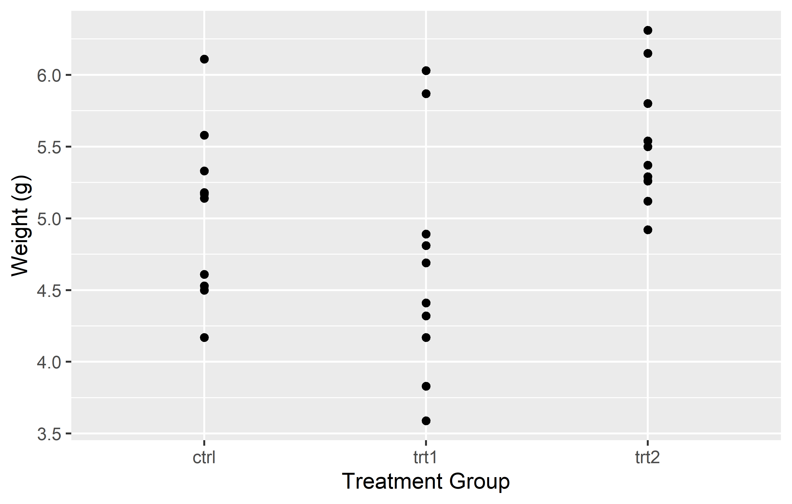
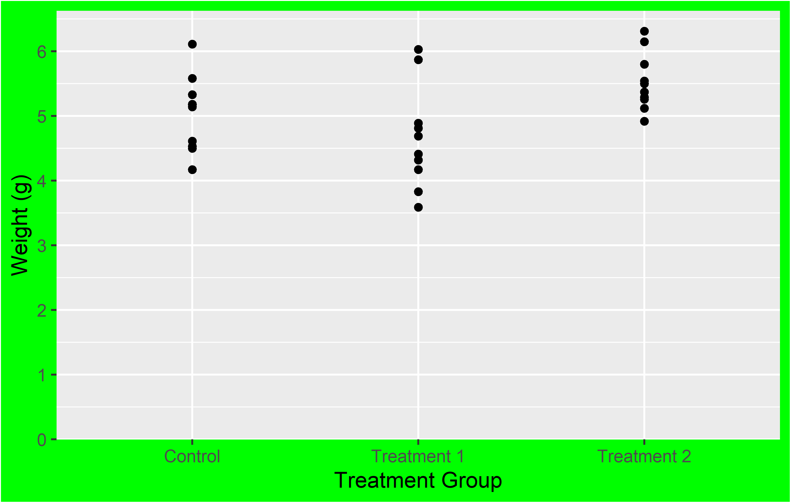
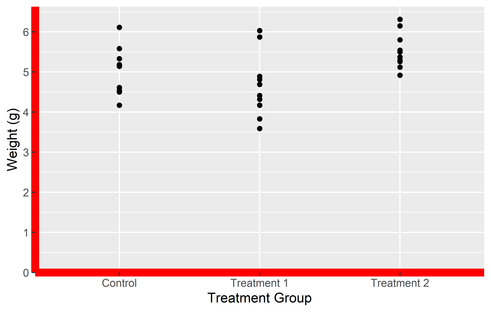
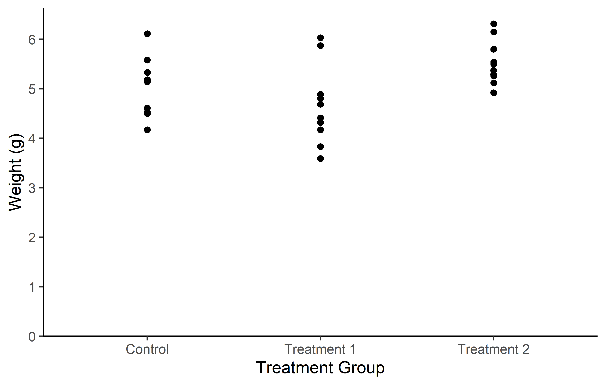
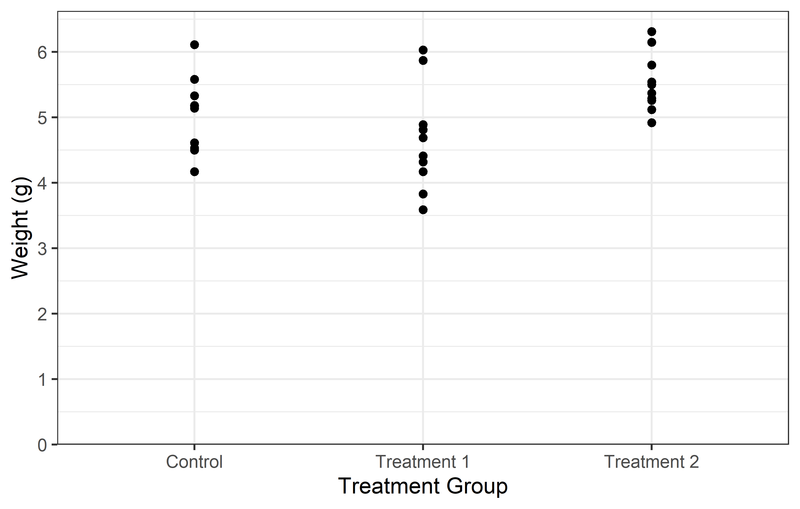
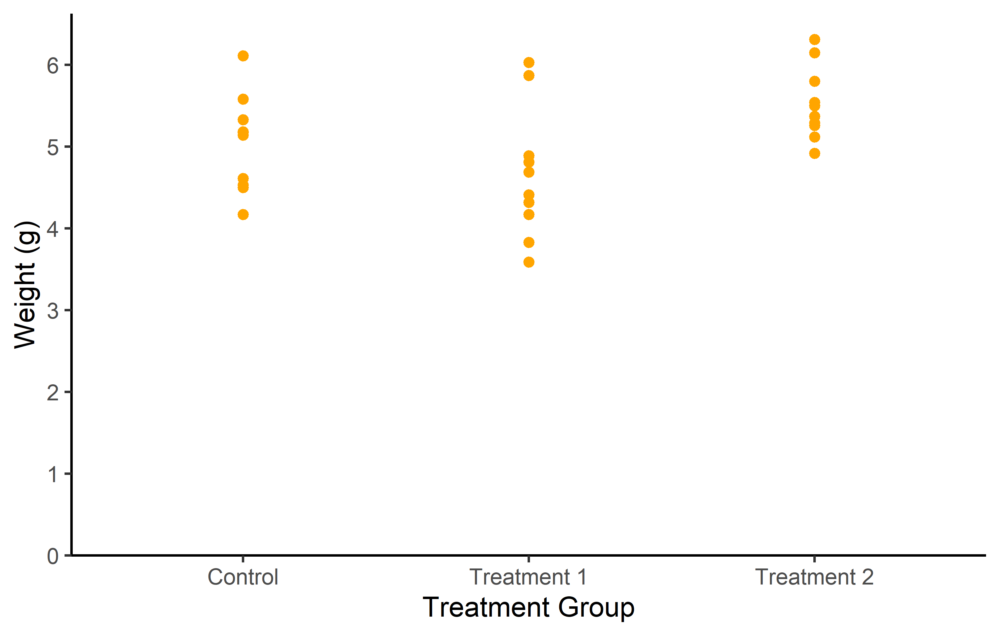

pacman::p_load(
ggplot2,
ggrepel,
ggtext
)How I use ggplot2
Paul Schmidt ![]()
Content summary
A brief introduction to ggplot2. Be warned: This chapter provides detailed insight into certain aspects, while other components are not discussed at all.
Before we start
Who this is for
This tutorial serves as an introductory guide to ggplot2, tailored specifically for beginners with no prior exposure to ggplot2. However, it’s worth mentioning that as we delve deeper into the subject, we’ll employ both BaseR and tidyverse code for some data preparations.
In addition, this ggplot2 guide reflects my personal approach and application of visualization techniques, focusing on the disciplines that align with the theme of this website - from agricultural sciences to experimental data from biology or life sciences at large. This tutorial, therefore, may not encompass all facets of ggplot2, but rather those elements that I frequently utilize in these specific domains.
Other resources
Here are some other ggplot2 tutorials and resources that I like:
- Chapter 3: Data Visualisation in (Wickham and Grolemund 2017)
- Cédric Scherer’s (2022a) A ggplot2 tutorial for beautiful plotting in R
- Cédric Scherer’s (2022b) Graphic Design with ggplot2
- Andrew Heiss’ (2023) Data visualization with R
- Claus Wilke’s (2019) Fundamentals of Data Visualization
Packages to install & load
We are using the p_load() function of the {pacman} package to install and load all necessary packages for this tutorial.
Showcase
Here are some beautiful ggplots
Let’s start
Let us start by creating a plot that requires a minimum amount of code, but is still informative. We make use the PlantGrowth data, which is directly accessible in R.
ggplot(data = PlantGrowth,
mapping = aes(y = weight, x = group)) +
geom_point()
ggplot(data = PlantGrowth) +
aes(y = weight, x = group) +
geom_point()
Actually, you can see we created the same plot twice using slightly different code. Apologies for immediately confusing you with this, but it would be even more confusing if we postpone this topic.
Let’s try to understand the general approach by looking at the first version of the code. The code for any ggplot always starts with the ggplot() function and then layers are added to it via the + operator.
The data = argument in ggplot() is where you specify the dataset you want to visualize. Think of it as telling ggplot “Here is the data I want you to work with.”
The mapping = aes() argument is where you define the aesthetic mappings, like which columns of the data should be represented on the x and y axes. It’s like giving ggplot specific instructions on “How should you represent this data?” For instance, mapping = aes(x = column1, y = column2) would tell ggplot to use column1 for the x-axis and column2 for the y-axis.
So, together, these two arguments form the fundamental instructions for any ggplot: “Here is my data, and this is how I want you to represent it.”
Looking at our two versions of code that result in the same plot, you can see that they only differ in how the aes() is included. The far more common approach is to include it inside the ggplot() function as in the first version. However, I am not the only one who argues that the second version is simply easier to read, which is why I am using it. Other than that, there is no difference between the two versions.
Finally, there is geom_point(). This function, known as a geometric object or “geom”, represents the type of plot you want to create. In ggplot2, every type of plot is associated with a specific geom function. For our example,geom_point() is used to create a scatter plot, draws a point for each observation. The geom_point() function is added to the base ggplot() call using the + operator, just like the other layers. In this way, it’s as if we’re telling ggplot: “And here is the type of plot I want you to create.”. Again - it already knows where to draw the points because we told it about the data and aesthetic mapping.
Other geoms you might use include geom_boxplot() for boxplots, geom_line() for line graphs, and many more. Each geom function has its own set of aesthetics and other arguments that you can specify to customize your plot. By using these different geoms, you can create a wide variety of plots to meet your specific data visualization needs.
Now you understand the absolute minimum of how to create a ggplot.
Additional Resources
Saving and reusing plots
In ggplot2, you can save your plots into an object. This allows you to reuse and modify your plots without having to rewrite all the code. This is particularly useful when you are building complex plots layer by layer.
Let’s take the plot we have created so far. Instead of writing the code for all the layers every time, we can save the plot into an object and then add new layers to this object. This way, we can focus on the new layers we are adding, making our code more readable and manageable.
Here’s how we can do this:
myplot <- ggplot(data = PlantGrowth) +
aes(y = weight, x = group) +
geom_point()Be aware that when running this code, you will not get to see the plot you just saved. Instead, you would need to run the myplot object to see the plot:
myplot
This approach of saving and reusing plots not only makes our code more readable and manageable, but also allows us to experiment with different layers and modifications without affecting our original plot.
From now on, we will use this approach in our tutorial. At the end of each main section, we will update myplot with the new layers we have discussed in that section. This will allow us to build our plot step by step, focusing on one aspect at a time.
Axes
In ggplot2, the scale_x_* and scale_y_* functions are used to control the appearance of the x and y axes, respectively. These functions allow you to set the scale type (continuous, discrete, etc.), the axis labels, the tick mark labels, and the range of values displayed on the axis.
Regarding the scale type, we need to use scale_y_continuous() (since weight is a continous, metric variable) and scale_x_discrete() (since group is a discrete, categorical variable) for our scatter plot.
Name
The name = allows you to change the axis titles.
myplot +
scale_y_continuous(name = "Weight (g)") +
scale_x_discrete(name = "Treatment Group")
Limits
The limits = argument in the scale_*_* functions allows you to specify the range of values displayed on the axis. This can be particularly useful when you want to focus on a specific part of your data. Let’s see how this works in practice with our scatter plot example.
In the left plot, we use the limits = argument in scale_y_continuous() to set the y-axis to range from 0 to 7. This works as expected, showing all weights from 0 to 7. However, including only “ctrl” and “trt2” (i.e. the first and last level) in the limits = argument of in scale_x_discrete(), results in only these two groups being displayed on the x-axis. The key point here is that for a discrete scale, the limits = argument needs to include all the levels you want to display.
In the right plot, we again use the limits = argument in scale_y_continuous(), but this time we only specify the lower limit (0) and use NA for the upper limit. This tells ggplot2 to start the y-axis at 0 and end it at the maximum value in the data, which is the default behavior. For the x-axis, we provide all three levels (“trt1”, “ctrl”, “trt2”) in the limits = argument of scale_x_discrete(). This not only ensures that all groups are displayed, but also allows us to control the order in which they appear.
This demonstrates how the limits = argument can be used differently in scale_*_continuous() and scale_*_discrete(). In a continuous scale, it defines the range of values, while in a discrete scale, it specifies which levels to include and their order.
In the end, it’s important to note that setting the limits can exclude data outside the specified range from the plot. This means that the excluded data will not be considered when calculating statistics or generating geoms. In other words, while setting limits can help focus your plot on specific aspects of your data, it can also exclude important information. Always consider the implications of setting limits on your data visualization.
Additional Resources
- If you are wondering why I wanted the y-axis to start at 0, read this, this and this
- List of all scales functions
Breaks
The breaks = argument in these functions allows you to specify the locations of the tick marks on the axis.
In the left plot, we use the breaks = argument in scale_y_continuous() to set the y-axis tick marks at 0 and 6. This really results in only two tick marks being displayed on the y-axis. While this is not typically useful for data representation, it serves to illustrate that the breaks = argument can be used to place tick marks at any specified values.
In the right plot, we use the seq() function in the breaks = argument to set the y-axis tick marks at every integer value from 0 to 6. This provides a more informative view of the data, as it allows us to see the weight values at regular intervals.
Tip
Instead of having to manually write “6” in breaks = seq(0, 6) you can instead do this:
-
breaks = seq(0, max(PlantGrowth$weight))automatically finds the maximum value in the data -
breaks = scales::breaks_width(1)makes use of thebreaks_width()function in the {scales} package to simply define the width of the breaks
Labels
The labels = argument allows you to specify the text that is displayed for each tick mark on the axis. This can be particularly useful when the values in your data are not self-explanatory or when you want to use more descriptive labels.

In the first example, we simply provide a vector of labels. This works fine as long as the levels on the x-axis are in the same order as the labels in the vector. However, if the levels are not in the expected order, the labels will be associated with the wrong levels.
In the second example, we provide a named vector of labels. This ensures that the labels are correctly associated with their corresponding levels, regardless of the order of the levels. This is why using a named vector is often the safer option.
Tip
You can also use labels = on continuous axes, if you make use of the label_*() functions in the {scales} package. Here are some examples:
-
labels = label_number()displays numbers on your axis any way you want. E.g.decimal.mark = "."displays axis label 3.14 as 3,14 etc. -
labels = label_percent()displays axis labels 0.05, 0.4 as 5%, 40% etc. -
labels = label_log()displays axis labels 10, 100, 1000 as \(10^1\), \(10^2\), \(10^3\) etc.
Expand
The expand = argument in the scale_*_* functions allows you to control the expansion of the scale. This is particularly useful when you want to adjust the space between the plotted data and the axes.
By default, ggplot2 adds a small amount of space around the data to ensure that the data doesn’t overlap with the axes. However, there might be situations where you want to adjust this space. For instance, you might want to remove the space below the 0 on the y-axis.
In the left plot, we use the expand = c(0, 0) argument in scale_y_continuous() to simply set the expansion to 0 on both sides of the scale. This removes all extra space around the data. However, this also results in the plot being cut off right at the maximum observation, which might not be desirable.
In the right plot, we use the expansion() function in the expand = argument. This function allows us to set different expansion multipliers for the lower and upper limits of the scale. Here, we set the lower multiplier to 0 to remove the space below 0, and the upper multiplier to 0.05 to add a small amount (= 5%) of space above the maximum observation.
Tip
For a better understanding of how this expansion-thing works, I found this cheat sheet to be insightful.
We update our myplot according to what we just learned. To get a better overview, we recreate it from scratch:
myplot <- ggplot(data = PlantGrowth) +
aes(y = weight, x = group) +
geom_point() +
scale_y_continuous(
name = "Weight (g)",
limits = c(0, NA),
breaks = seq(0, 6),
expand = expansion(mult = c(0, 0.05))
) +
scale_x_discrete(
name = "Treatment Group",
labels = c(
ctrl = "Control",
trt1 = "Treatment 1",
trt2 = "Treatment 2"
)
)Theme
In ggplot2, the theme() function is a powerful tool that allows you to customize the non-data components of your plot. This includes the plot background, grid lines, axis lines, text, legend, and more. By using theme(), you can create plots that not only represent your data accurately, but also align with your personal or organizational style guidelines.
Let’s take a look at two examples where we use theme() to modify the plot background and the axis lines.
myplot +
theme(plot.background = element_rect(fill = "green"))
myplot +
theme(axis.line = element_line(color = "red", linewidth = 3))
In the first example, we use theme(plot.background = element_rect(fill = "green")) to change the plot background to green. In the second example, we use theme(axis.line = element_line(color = "red", linewidth = 3)) to change the color of the axis lines to red and increase their width. While these functions may seem a bit cryptic, the good news is that there are only four different theme elements: element_blank() draws nothing, and assigns no space, element_rect() for borders and backgrounds, element_line() for lines and element_text() for text.
While the theme() function provides a high level of customization, it can be time-consuming to manually specify every detail of your plot. To save time, ggplot2 provides several predefined “complete themes” that you can use. These themes have been professionally designed and provide a quick way to change the overall appearance of your plot.
The default theme in ggplot2 is theme_grey(). However, there are several other themes available, such as theme_bw(), theme_classic(), theme_dark(), and more. Let’s take a look at two of these themes that I personally like:
myplot +
theme_classic()
myplot +
theme_bw()
Note that you can also first add a complete theme_*() and subsequently change individual aspects of it with via theme().
Remember, while themes can greatly enhance the aesthetic appeal of your plots, the most important aspect of any plot is its ability to accurately and effectively convey information about your data. Always prioritize clarity and accuracy over aesthetic appeal when creating your plots.
Additional Resources
We update our myplot according to what we just learned. To get a better overview, we recreate it from scratch:
myplot <- ggplot(data = PlantGrowth) +
aes(y = weight, x = group) +
geom_point() +
scale_y_continuous(
name = "Weight (g)",
limits = c(0, NA),
breaks = seq(0, 6),
expand = expansion(mult = c(0, 0.05))
) +
scale_x_discrete(
name = "Treatment Group",
labels = c(
ctrl = "Control",
trt1 = "Treatment 1",
trt2 = "Treatment 2"
)
) +
theme_classic()Export
Once you have created a plot in ggplot2, you may want to export it as an image file. This can be useful for including the plot in a report, a presentation, or a website.
In RStudio, you can manually export your plots by clicking on the ‘Export’ button in the ‘Plots’ pane. This will open a dialog box where you can choose the format and settings for your exported image.
However, a more flexible and reproducible way to export your plots is by using the ggsave() function provided by ggplot2. This function allows you to specify the details of the exported image directly in your code, ensuring that you can reproduce the exact same image in the future. The ggsave() function has several arguments that allow you to specify the details of the exported image:
ggsave(
filename = "myplot.png",
plot = myplot,
path = "C:/Users/YourName/Documents",
scale = 1,
width = 6,
height = 4,
units = "cm",
dpi = 300
)filename: This is the name of the file that you want to create. You should include the file extension (e.g., .png, .jpg, .pdf) in the filename. The file extension determines the format of the exported image.
plot: This is the plot that you want to save. If you don’t specify a plot, ggsave() will save the last plot that you created.
path: This is the directory where you want to save the file. If you don’t specify a path, ggsave() will save the file in your current working directory.
scale: This is a scaling factor that is applied to the text and elements of the plot. A scale of 1 means that the plot is saved at its original size. A scale of 2 means that the plot is saved at twice its original size.
width, height: These are the dimensions of the exported image. You can specify the dimensions in any units that you like (e.g., inches, cm, mm).
units: This is the units in which the width and height are specified. The default is “in” for inches, but you can also use “cm” for centimeters, “mm” for millimeters, or “px” for pixels.
dpi: This is the resolution of the exported image in dots per inch. A higher dpi will result in a higher-quality image, but the file size will also be larger. The default dpi is 300, which is suitable for most purposes.
In this example, we are saving myplot as a PNG file named “myplot.png” in the Documents directory. The plot is saved at its original size (scale = 1) and the dimensions of the image are 6 cm by 4 cm. The resolution of the image is 300 dpi.
Tip
If you want to open the image file you’ve just created directly on your computer, you can use the system() function in R. For instance, system('open "FILENAME"') will open the specified file. So, in our case, running system('open "C:/Users/YourName/Documents/myplot.png"') will open the PNG file we’ve just created, and it will do so outside of RStudio.
I find this approach preferable to viewing my ggplot in RStudio’s Plots-pane, because it gives you a more accurate preview of how your plot will look in its final context. The preview in RStudio actually doesn’t do this, because the scale and size of the plot adjusts to the size you dragged the Plots-pane to.
Here is a gist of how I used to apply this approach, but nowadays I wrapped all of this into my own function.
Color, Shape and More
In ggplot2, the aesthetics of your plot, such as color and shape, can be adjusted to enhance the visual representation of your data. In this section, we will explore how to manipulate these aesthetics using the geom_point() function.
First, let’s recreate our myplot object, but this time without the geom_point() layer. This will provide us with a clean slate to experiment with:
myplot <- ggplot(data = PlantGrowth) +
aes(y = weight, x = group) +
scale_y_continuous(
name = "Weight (g)",
limits = c(0, NA),
breaks = seq(0, 6),
expand = expansion(mult = c(0, 0.05))
) +
scale_x_discrete(
name = "Treatment Group",
labels = c(
ctrl = "Control",
trt1 = "Treatment 1",
trt2 = "Treatment 2"
)
) +
theme_classic()General Aesthetic Modifications
To show you what is possible with geom_point(), let’s create two new plots. In the first plot, we will set the color of the points to orange. In the second plot, we will modify several aspects of the points, including color, shape, size, and transparency.
myplot +
geom_point(color = "orange")
myplot +
geom_point(
color = "purple",
shape = 18,
size = 3,
alpha = 0.5
)
In the first plot, we use color = “orange” inside the geom_point() function. This sets the color of all points to orange.
In the second plot, we modify several aspects of the points:
- color = “purple” sets the color of the points to purple. shape = 18 changes the shape of the points. ggplot2 includes several different shapes that you can use. The number 18 corresponds to a filled diamond shape.
- size = 3 increases the size of the points. The size is measured in mm.
- alpha = 0.5 sets the transparency of the points. The alpha value ranges from 0 (completely transparent) to 1 (completely opaque).
These modifications allow us to customize the appearance of the points to suit our preferences and the needs of our data.
Aesthetic Mapping with aes()
End
Heiss, Andrew. 2023. “Data Visualization with R - Data Visualization.” https://datavizs23.classes.andrewheiss.com/.
Scherer, Cédric. 2022a. “A Ggplot2 Tutorial for Beautiful Plotting in r.” Cédric Scherer Blog. https://www.cedricscherer.com/2019/08/05/a-ggplot2-tutorial-for-beautiful-plotting-in-r/.
———. 2022b. “Graphic Design with Ggplot2 - Graphic Design with Ggplot2.” Rstudio::conf(2022) Workshop. https://rstudio-conf-2022.github.io/ggplot2-graphic-design/.
Wickham, Hadley, and Garrett Grolemund. 2017. R for Data Science: Import, Tidy, Transform, Visualize, and Model Data. 1st ed. O’Reilly Media, Inc. https://r4ds.had.co.nz/.
Wilke, Claus O. 2019. Fundamentals of data visualization. O’Reilly Media. https://clauswilke.com/dataviz/.
Citation
BibTeX citation:
@online{schmidt2023,
author = {Paul Schmidt},
title = {How {I} Use Ggplot2},
date = {2023-08-18},
url = {https://schmidtpaul.github.io/dsfair_quarto//ch/summaryarticles/ggplot2intro.html},
langid = {en},
abstract = {A brief introduction to ggplot2. Be warned: This chapter
provides detailed insight into certain aspects, while other
components are not discussed at all.}
}
For attribution, please cite this work as:
Paul Schmidt. 2023. “How I Use Ggplot2.” August 18, 2023.
https://schmidtpaul.github.io/dsfair_quarto//ch/summaryarticles/ggplot2intro.html.